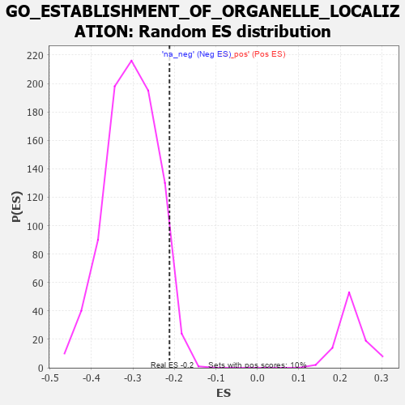

| | | Dataset | 7d |
| Phenotype | NoPhenotypeAvailable |
| Upregulated in class | na_neg |
| GeneSet | GO_ESTABLISHMENT_OF_ORGANELLE_LOCALIZATION |
| Enrichment Score (ES) | -0.21197964 |
| Normalized Enrichment Score (NES) | -0.697249 |
| Nominal p-value | 0.9457965 |
| FDR q-value | 1.0 |
| FWER p-Value | 1.0 |
Table: GSEA Results Summary
 Fig 1: Enrichment plot: GO_ESTABLISHMENT_OF_ORGANELLE_LOCALIZATION
Fig 1: Enrichment plot: GO_ESTABLISHMENT_OF_ORGANELLE_LOCALIZATION
Profile of the Running ES Score & Positions of GeneSet Members on the Rank Ordered List
| PROBE | GENE SYMBOL | GENE_TITLE | RANK IN GENE LIST | RANK METRIC SCORE | RUNNING ES | CORE ENRICHMENT | | 1 | SPO11 | | | 35 | 3.371 | 0.0627 | No |
| 2 | RAC2 | | | 60 | 2.442 | 0.1082 | No |
| 3 | FOXF1 | | | 176 | 1.136 | 0.1162 | No |
| 4 | NSF | | | 243 | 0.947 | 0.1266 | No |
| 5 | MLH1 | | | 423 | 0.679 | 0.1174 | No |
| 6 | NMD3 | | | 513 | 0.625 | 0.1185 | No |
| 7 | KIF23 | | | 522 | 0.622 | 0.1298 | No |
| 8 | MX1 | | | 578 | 0.604 | 0.1348 | No |
| 9 | CCNB1 | | | 581 | 0.601 | 0.1465 | No |
| 10 | NDC80 | | | 616 | 0.590 | 0.1540 | No |
| 11 | NOP9 | | | 993 | 0.485 | 0.1157 | No |
| 12 | AP3S1 | | | 1063 | 0.471 | 0.1163 | No |
| 13 | MYO1D | | | 1099 | 0.464 | 0.1211 | No |
| 14 | DOCK7 | | | 1398 | 0.410 | 0.0913 | No |
| 15 | NUP88 | | | 1429 | 0.404 | 0.0956 | No |
| 16 | CHMP7 | | | 1435 | 0.403 | 0.1030 | No |
| 17 | TRAK1 | | | 1714 | 0.354 | 0.0746 | No |
| 18 | ESPL1 | | | 1734 | 0.349 | 0.0791 | No |
| 19 | NUP62 | | | 1871 | 0.324 | 0.0682 | No |
| 20 | CUL3 | | | 1893 | 0.321 | 0.0720 | No |
| 21 | ZW10 | | | 1973 | 0.309 | 0.0681 | No |
| 22 | MCFD2 | | | 1975 | 0.309 | 0.0741 | No |
| 23 | GOSR2 | | | 2050 | 0.298 | 0.0706 | No |
| 24 | CENPE | | | 2086 | 0.293 | 0.0720 | No |
| 25 | CNIH1 | | | 2159 | 0.283 | 0.0684 | No |
| 26 | SYK | | | 2186 | 0.278 | 0.0707 | No |
| 27 | WASF1 | | | 2303 | 0.259 | 0.0610 | No |
| 28 | SEC13 | | | 2330 | 0.256 | 0.0628 | No |
| 29 | CDT1 | | | 2505 | 0.226 | 0.0452 | No |
| 30 | YKT6 | | | 2571 | 0.217 | 0.0412 | No |
| 31 | VPS4A | | | 2654 | 0.205 | 0.0348 | No |
| 32 | LMAN1 | | | 2743 | 0.192 | 0.0274 | No |
| 33 | RIOK2 | | | 2775 | 0.187 | 0.0272 | No |
| 34 | SCFD1 | | | 2783 | 0.185 | 0.0300 | No |
| 35 | FER | | | 2803 | 0.183 | 0.0312 | No |
| 36 | BECN1 | | | 2828 | 0.179 | 0.0317 | No |
| 37 | COPG2 | | | 2859 | 0.173 | 0.0314 | No |
| 38 | GOSR1 | | | 2940 | 0.159 | 0.0244 | No |
| 39 | RAB17 | | | 2950 | 0.157 | 0.0264 | No |
| 40 | BTK | | | 2958 | 0.156 | 0.0286 | No |
| 41 | XPO1 | | | 2960 | 0.156 | 0.0315 | No |
| 42 | ABCE1 | | | 3051 | 0.143 | 0.0229 | No |
| 43 | FEZ1 | | | 3055 | 0.142 | 0.0254 | No |
| 44 | MAP2 | | | 3074 | 0.140 | 0.0259 | No |
| 45 | PAX6 | | | 3170 | 0.127 | 0.0163 | No |
| 46 | TFG | | | 3243 | 0.114 | 0.0094 | No |
| 47 | KIF1A | | | 3415 | 0.088 | -0.0106 | No |
| 48 | CDK5 | | | 3480 | 0.080 | -0.0172 | No |
| 49 | FES | | | 3501 | 0.077 | -0.0182 | No |
| 50 | LSG1 | | | 3534 | 0.070 | -0.0209 | No |
| 51 | PARD3 | | | 3584 | 0.063 | -0.0259 | No |
| 52 | STK25 | | | 3602 | 0.059 | -0.0268 | No |
| 53 | CBL | | | 3621 | 0.056 | -0.0280 | No |
| 54 | SYT11 | | | 3732 | 0.036 | -0.0413 | No |
| 55 | CEP19 | | | 3778 | 0.031 | -0.0464 | No |
| 56 | SPAST | | | 3801 | 0.027 | -0.0487 | No |
| 57 | BET1 | | | 3817 | 0.025 | -0.0501 | No |
| 58 | AP3B2 | | | 3974 | -0.002 | -0.0699 | No |
| 59 | CHMP6 | | | 3977 | -0.003 | -0.0701 | No |
| 60 | TOR1A | | | 4030 | -0.013 | -0.0765 | No |
| 61 | MCPH1 | | | 4039 | -0.014 | -0.0772 | No |
| 62 | SYNJ1 | | | 4173 | -0.038 | -0.0934 | No |
| 63 | EXOC4 | | | 4182 | -0.039 | -0.0936 | No |
| 64 | GBF1 | | | 4215 | -0.044 | -0.0968 | No |
| 65 | RRS1 | | | 4256 | -0.051 | -0.1009 | No |
| 66 | WDR11 | | | 4262 | -0.052 | -0.1005 | No |
| 67 | RAN | | | 4299 | -0.059 | -0.1039 | No |
| 68 | SAR1A | | | 4304 | -0.060 | -0.1032 | No |
| 69 | OPA1 | | | 4330 | -0.065 | -0.1051 | No |
| 70 | STX5 | | | 4400 | -0.077 | -0.1124 | No |
| 71 | KIF3B | | | 4450 | -0.085 | -0.1169 | No |
| 72 | LRRK2 | | | 4467 | -0.087 | -0.1172 | No |
| 73 | PINX1 | | | 4515 | -0.097 | -0.1213 | No |
| 74 | SYT4 | | | 4590 | -0.116 | -0.1284 | No |
| 75 | MYO5A | | | 4787 | -0.155 | -0.1503 | No |
| 76 | USO1 | | | 4855 | -0.168 | -0.1555 | No |
| 77 | DLG1 | | | 4860 | -0.169 | -0.1526 | No |
| 78 | VAMP8 | | | 4905 | -0.179 | -0.1546 | No |
| 79 | CHMP5 | | | 4952 | -0.188 | -0.1568 | No |
| 80 | PDPK1 | | | 5043 | -0.207 | -0.1641 | No |
| 81 | DCTN2 | | | 5175 | -0.243 | -0.1759 | No |
| 82 | ATM | | | 5210 | -0.249 | -0.1753 | No |
| 83 | GPSM2 | | | 5228 | -0.252 | -0.1725 | No |
| 84 | RAB7A | | | 5302 | -0.271 | -0.1764 | No |
| 85 | AP3S2 | | | 5433 | -0.303 | -0.1869 | No |
| 86 | KIF3A | | | 5480 | -0.313 | -0.1865 | No |
| 87 | NDE1 | | | 5578 | -0.339 | -0.1921 | No |
| 88 | SLIT1 | | | 5735 | -0.387 | -0.2043 | Yes |
| 89 | MX2 | | | 5745 | -0.390 | -0.1976 | Yes |
| 90 | CDC23 | | | 5756 | -0.394 | -0.1911 | Yes |
| 91 | VAMP7 | | | 5777 | -0.399 | -0.1857 | Yes |
| 92 | LAMP1 | | | 5796 | -0.404 | -0.1799 | Yes |
| 93 | BBS4 | | | 5806 | -0.407 | -0.1730 | Yes |
| 94 | SNX4 | | | 5834 | -0.415 | -0.1682 | Yes |
| 95 | ARL6 | | | 5847 | -0.417 | -0.1614 | Yes |
| 96 | BBS5 | | | 5862 | -0.421 | -0.1548 | Yes |
| 97 | SUN2 | | | 5893 | -0.433 | -0.1500 | Yes |
| 98 | STK11 | | | 5922 | -0.443 | -0.1447 | Yes |
| 99 | DCTN1 | | | 5950 | -0.454 | -0.1391 | Yes |
| 100 | PLK1 | | | 6082 | -0.500 | -0.1459 | Yes |
| 101 | UBB | | | 6090 | -0.503 | -0.1368 | Yes |
| 102 | AP3M1 | | | 6100 | -0.506 | -0.1278 | Yes |
| 103 | MYO1E | | | 6200 | -0.537 | -0.1297 | Yes |
| 104 | CDC42 | | | 6236 | -0.548 | -0.1233 | Yes |
| 105 | AP3D1 | | | 6261 | -0.558 | -0.1152 | Yes |
| 106 | BOD1 | | | 6320 | -0.583 | -0.1110 | Yes |
| 107 | BBS2 | | | 6383 | -0.608 | -0.1068 | Yes |
| 108 | CLN3 | | | 6580 | -0.699 | -0.1178 | Yes |
| 109 | ARF1 | | | 6583 | -0.701 | -0.1041 | Yes |
| 110 | TMED2 | | | 6665 | -0.746 | -0.0996 | Yes |
| 111 | CEP83 | | | 7020 | -0.950 | -0.1258 | Yes |
| 112 | MYH10 | | | 7048 | -0.966 | -0.1100 | Yes |
| 113 | PIBF1 | | | 7049 | -0.966 | -0.0908 | Yes |
| 114 | BBS7 | | | 7089 | -0.988 | -0.0760 | Yes |
| 115 | RAB1A | | | 7096 | -0.993 | -0.0570 | Yes |
| 116 | MYO7A | | | 7302 | -1.175 | -0.0598 | Yes |
| 117 | PDCD6 | | | 7630 | -1.615 | -0.0693 | Yes |
| 118 | CROCC | | | 7639 | -1.628 | -0.0379 | Yes |
| 119 | MYO6 | | | 7697 | -1.753 | -0.0102 | Yes |
| 120 | GRIA1 | | | 7836 | -2.260 | 0.0172 | Yes |
Table: GSEA details [plain text format]

Fig 2: GO_ESTABLISHMENT_OF_ORGANELLE_LOCALIZATION: Random ES distribution
Gene set null distribution of ES for GO_ESTABLISHMENT_OF_ORGANELLE_LOCALIZATION